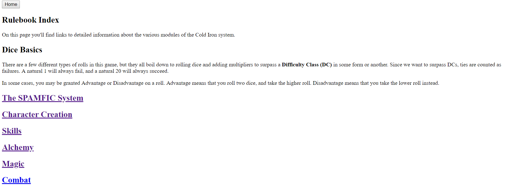

Got the dynamic tables up and running on the items page. I think it's pretty project-agnostic, so it could be used in other sites without too much modification.
I've got to change my .csv files into JSON objects, but there are plenty of online converters to do that for me.
Started this changelog properly. So far, the site's got:
The site has a pretty 90's feel to it right now, except not a commercial 90's feel, but the academic feel. It's like a university course's website that has the syllabus, down to the bland white background and Time New Roman.
